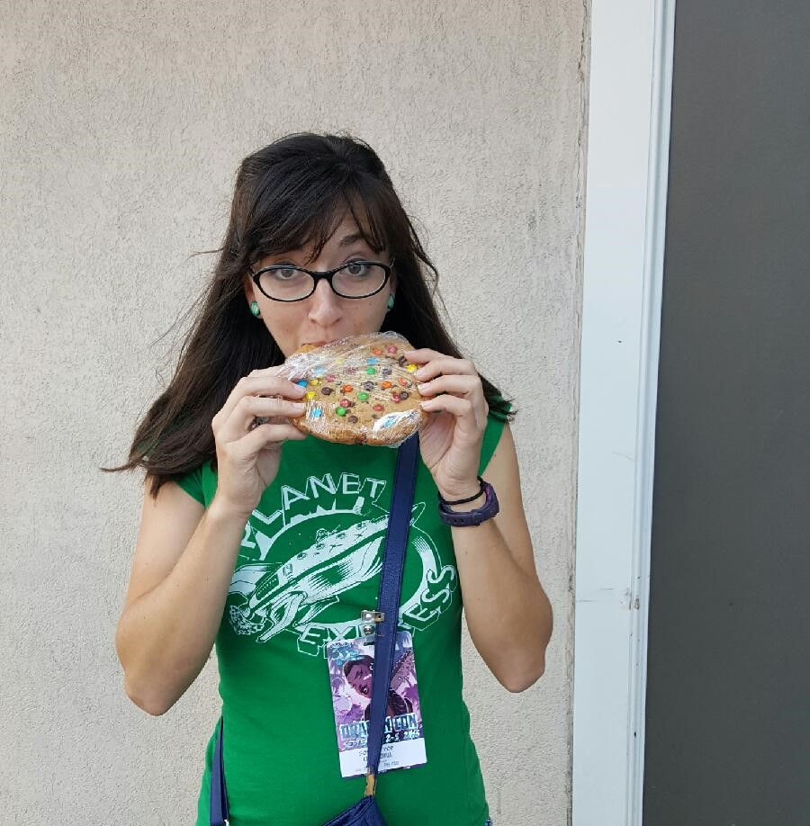
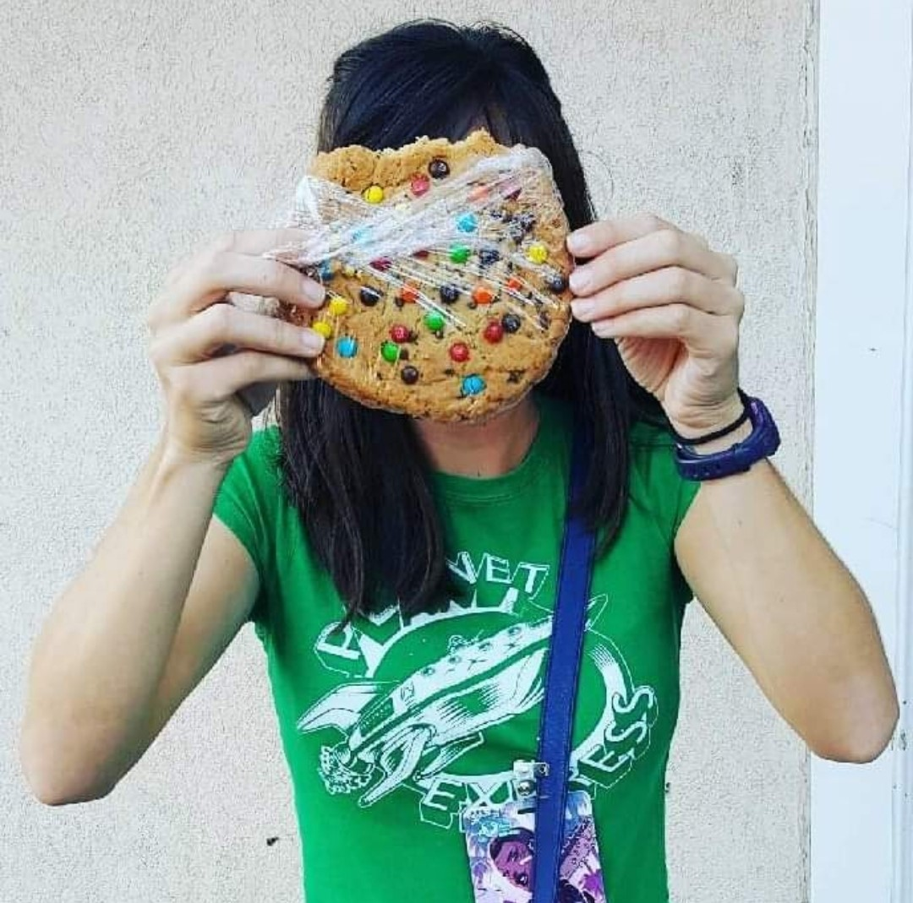

My name is Kayla McDanel. I'm not from 'round here but I'm learning as fast
as I can. I'm on the older side of being a millennial. You know, the kind with a good work ethic, patience,
and the ability to entertain oneself without technology but does understand it quite well.

I enjoy food, music, and being near
water unless I'm in an airplane. My dog is the best dog, but other dogs are pretty cool.
My soft skills include knowing how to relay information in a way people understand, a hefty dose of common sense,
an innate capacity for curiosity and learning, a love for languages of all kinds, and the occasion lapse in brain
function to keep me humble.